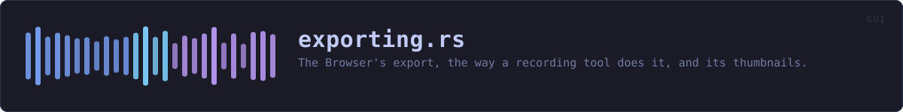

crates/veilvoice-gui/src/exporting.rs
veilvoice-gui · 1168 lines · read the source here · or on GitHub
The Browser's export, the way a recording tool does it, and its thumbnails.
Roadmap item 175. The questions and the picture live in veilvoice_video::export and veilvoice_video::motion, where the command line can reach them too. This is the window's half: what the person has chosen, the worker that renders it, and a small picture of every recording in the list.
Nothing here runs on the thread that draws
A render is minutes and a thumbnail is a decryption. Both are started from the Browser and both finish on a worker (run and Thumbs::ask), which is the rule roadmap item 167 set for the whole window and a guard in crate::draw_path_tests holds it to.
The key is held for one recording at a time
The render takes the shared vault, loads one recording and lets go of it before anything else happens, exactly as the older export does (F-219). The thumbnails hold a std::sync::Weak rather than the vault itself: each recording is loaded through a strong reference that is dropped straight after, so shutting the vault while thumbnails are being drawn stops them at the next recording rather than keeping the key alive until the list ends.
Thumbnails are never written anywhere
They are pictures of the veiled audio, and they are still drawn from what is in the vault. They exist as textures while the vault is open and nowhere else: no cache on the disk, nothing that survives Thumbs::clear.
In plain words
The export button in the Browser: which kind of file, how good, how it looks, and then the work done in the background with a bar that counts the frames. And a little picture of each recording in the list, drawn in the same style the video will be.
WHAT THIS FILE CONTAINS
1168 lines defining 23 functions (10 public), 5 types and 3 constants. Everything below is read out of the source, so it cannot disagree with the code.
The types it owns.
struct Choiceline 55 · Everything the person has chosen about an export.enum Outcomeline 93 · How a finished export reads: good, worth a second look, or failed.struct Jobline 103 · Everything one export needs, taken at the moment the folder was chosen.struct Workroomline 353 · A folder of one export's own, beside where its file is going, removed with everything in it when the export is done, however it ended.struct Thumbsline 717 · A small picture of every recording in the list.
What happens when it runs. These are the ways in: public, and nothing else in this file calls them, so they are what an outside caller reaches first.
Choice::use_templateline 83 · Start again from a template, keeping the file settings.reach_forline 127 · How far an export with this choice can say it has got.runline 200 · Do the export.
reachesrun_with,already_there,drop,new,place,render,safe_stem,samples_of,wrote,reserved_on_windowsformline 491 · The export form, drawn under the recording it is for.
reacheslook,fillThumbs::getline 726 · The picture for a recording, once it has been drawn.Thumbs::clearline 732 · Forget every picture.Thumbs::pollline 740 · Take whatever pictures have arrived.Thumbs::askline 766 · Draw the pictures nobody has asked for yet, on a worker.
reachesdraw_thumbnails,drop,samples_of
WHAT CALLS WHAT
The functions this file defines, and the calls between them. An edge means the callee's name appears, called, inside the caller's body. This is a syntactic reading, not a type-resolved one. 22 of 23 functions are drawn; the diagram is bounded at 22 so it stays readable.
The same graph as Mermaid source
%%{init: {"theme":"base","themeVariables":{"background":"#1a1b26","primaryColor":"#1f2335","primaryTextColor":"#c0caf5","primaryBorderColor":"#7aa2f7","secondaryColor":"#16161e","tertiaryColor":"#16161e","lineColor":"#737aa2","textColor":"#c0caf5","mainBkg":"#1f2335","nodeBorder":"#7aa2f7","clusterBkg":"#16161e","clusterBorder":"#2f3549","fontFamily":"ui-monospace, SFMono-Regular, Consolas, monospace","fontSize":"14px"}}}%%
flowchart TD
n_default["Choice::default<br/>line 68"]
n_use_template(["Choice::use_template<br/>line 83"])
n_reach_for(["reach_for<br/>line 127"])
n_safe_stem["safe_stem<br/>line 141"]
n_reserved_on_windows["reserved_on_windows<br/>line 165"]
n_samples_of["samples_of<br/>line 175"]
n_run(["run<br/>line 200"])
n_run_with["run_with<br/>line 216"]
n_already_there["already_there<br/>line 312"]
n_place["place<br/>line 330"]
n_new["Workroom::new<br/>line 358"]
n_drop["Workroom::drop<br/>line 394"]
n_wrote["wrote<br/>line 400"]
n_render["render<br/>line 410"]
n_form(["form<br/>line 491"])
n_look["look<br/>line 618"]
n_fill["fill<br/>line 666"]
n_get(["Thumbs::get<br/>line 726"])
n_clear(["Thumbs::clear<br/>line 732"])
n_poll(["Thumbs::poll<br/>line 740"])
n_ask(["Thumbs::ask<br/>line 766"])
n_draw_thumbnails["draw_thumbnails<br/>line 798"]
n_ask --> n_draw_thumbnails
n_draw_thumbnails --> n_drop
n_draw_thumbnails --> n_samples_of
n_form --> n_look
n_look --> n_fill
n_place --> n_already_there
n_render --> n_drop
n_run --> n_run_with
n_run_with --> n_already_there
n_run_with --> n_drop
n_run_with --> n_new
n_run_with --> n_place
n_run_with --> n_render
n_run_with --> n_safe_stem
n_run_with --> n_samples_of
n_run_with --> n_wrote
n_safe_stem --> n_reserved_on_windows
click n_default href "https://github.com/tilas01/veilvoice/blob/main/crates/veilvoice-gui/src/exporting.rs#L68" "open the source"
click n_use_template href "https://github.com/tilas01/veilvoice/blob/main/crates/veilvoice-gui/src/exporting.rs#L83" "open the source"
click n_reach_for href "https://github.com/tilas01/veilvoice/blob/main/crates/veilvoice-gui/src/exporting.rs#L127" "open the source"
click n_safe_stem href "https://github.com/tilas01/veilvoice/blob/main/crates/veilvoice-gui/src/exporting.rs#L141" "open the source"
click n_reserved_on_windows href "https://github.com/tilas01/veilvoice/blob/main/crates/veilvoice-gui/src/exporting.rs#L165" "open the source"
click n_samples_of href "https://github.com/tilas01/veilvoice/blob/main/crates/veilvoice-gui/src/exporting.rs#L175" "open the source"
click n_run href "https://github.com/tilas01/veilvoice/blob/main/crates/veilvoice-gui/src/exporting.rs#L200" "open the source"
click n_run_with href "https://github.com/tilas01/veilvoice/blob/main/crates/veilvoice-gui/src/exporting.rs#L216" "open the source"
click n_already_there href "https://github.com/tilas01/veilvoice/blob/main/crates/veilvoice-gui/src/exporting.rs#L312" "open the source"
click n_place href "https://github.com/tilas01/veilvoice/blob/main/crates/veilvoice-gui/src/exporting.rs#L330" "open the source"
click n_new href "https://github.com/tilas01/veilvoice/blob/main/crates/veilvoice-gui/src/exporting.rs#L358" "open the source"
click n_drop href "https://github.com/tilas01/veilvoice/blob/main/crates/veilvoice-gui/src/exporting.rs#L394" "open the source"
click n_wrote href "https://github.com/tilas01/veilvoice/blob/main/crates/veilvoice-gui/src/exporting.rs#L400" "open the source"
click n_render href "https://github.com/tilas01/veilvoice/blob/main/crates/veilvoice-gui/src/exporting.rs#L410" "open the source"
click n_form href "https://github.com/tilas01/veilvoice/blob/main/crates/veilvoice-gui/src/exporting.rs#L491" "open the source"
click n_look href "https://github.com/tilas01/veilvoice/blob/main/crates/veilvoice-gui/src/exporting.rs#L618" "open the source"
click n_fill href "https://github.com/tilas01/veilvoice/blob/main/crates/veilvoice-gui/src/exporting.rs#L666" "open the source"
click n_get href "https://github.com/tilas01/veilvoice/blob/main/crates/veilvoice-gui/src/exporting.rs#L726" "open the source"
click n_clear href "https://github.com/tilas01/veilvoice/blob/main/crates/veilvoice-gui/src/exporting.rs#L732" "open the source"
click n_poll href "https://github.com/tilas01/veilvoice/blob/main/crates/veilvoice-gui/src/exporting.rs#L740" "open the source"
click n_ask href "https://github.com/tilas01/veilvoice/blob/main/crates/veilvoice-gui/src/exporting.rs#L766" "open the source"
click n_draw_thumbnails href "https://github.com/tilas01/veilvoice/blob/main/crates/veilvoice-gui/src/exporting.rs#L798" "open the source"
classDef entry fill:#1f2335,stroke:#7aa2f7,color:#c0caf5
class n_use_template,n_reach_for,n_run,n_form,n_get,n_clear,n_poll,n_ask entry
classDef api fill:#1f2335,stroke:#7dcfff,color:#c0caf5
class n_safe_stem,n_samples_of api
classDef helper fill:#1f2335,stroke:#bb9af7,color:#c0caf5
class n_default,n_reserved_on_windows,n_run_with,n_already_there,n_place,n_new,n_drop,n_wrote,n_render,n_look,n_fill,n_draw_thumbnails helper
subgraph chart_key ["Key"]
direction LR
key_entry["entry: a way in: public, and nothing in this file calls it"]
key_api["api: public, and also used inside this file"]
key_helper["helper: private to this file"]
end
class key_entry entry
class key_api api
class key_helper helperThis site loads no third-party script, so it cannot run Mermaid; the diagram above is the same nodes and edges drawn by the generator instead. GitHub renders the source below directly.
ITEMS
| Item | Line | Documentation |
|---|---|---|
THUMB_WIDTH pub const | 49 | Width of a thumbnail, in pixels. |
THUMB_HEIGHT pub const | 51 | Height of a thumbnail, in pixels. |
Choice pub struct | 55 | Everything the person has chosen about an export. |
Choice::default fn | 68 | |
Choice::use_template pub fn | 83 | Start again from a template, keeping the file settings. |
Outcome pub enum | 93 | How a finished export reads: good, worth a second look, or failed. |
Job pub struct | 103 | Everything one export needs, taken at the moment the folder was chosen. |
NO_FRAMES pub const | 119 | Why no bar can be drawn for an export that has no picture. |
reach_for pub fn | 127 | How far an export with this choice can say it has got. |
safe_stem pub fn | 141 | A file name built from what somebody called a recording. |
reserved_on_windows fn | 165 | Whether Windows treats this name as a device rather than a file. |
samples_of pub fn | 175 | The samples and the rate of a canonical 16-bit WAV, mixed to one channel. |
run pub fn | 200 | Do the export. |
run_with fn | 216 | run, with where ffmpeg is found passed in, so a test can hand it a stand-in rather than depend on what the machine has installed. |
already_there fn | 312 | What an export says when its file is already there. |
place fn | 330 | Put the finished file where it was asked for, if nothing is there. |
Workroom struct | 353 | A folder of one export's own, beside where its file is going, removed with everything in it when the export is done, however it ended. |
Workroom::new fn | 358 | Makes a folder only this user can enter, beside beside, under a name no other folder there has. |
Workroom::path fn | 388 | Where the folder is, to write the job's files into. |
Workroom::drop fn | 394 | |
wrote fn | 400 | What a successful export says. |
render fn | 410 | Run ffmpeg, drawing and piping the frames when there is a picture. |
form pub fn | 491 | The export form, drawn under the recording it is for. |
look fn | 618 | The advanced half of the form: the typeface, the colours and the motion. |
fill fn | 666 | One colour, or two with a gradient between them. |
Thumbs pub struct | 717 | A small picture of every recording in the list. |
Thumbs::get pub fn | 726 | The picture for a recording, once it has been drawn. |
Thumbs::clear pub fn | 732 | Forget every picture. |
Thumbs::poll pub fn | 740 | Take whatever pictures have arrived. |
Thumbs::ask pub fn | 766 | Draw the pictures nobody has asked for yet, on a worker. |
draw_thumbnails fn | 798 | The worker behind Thumbs::ask. |